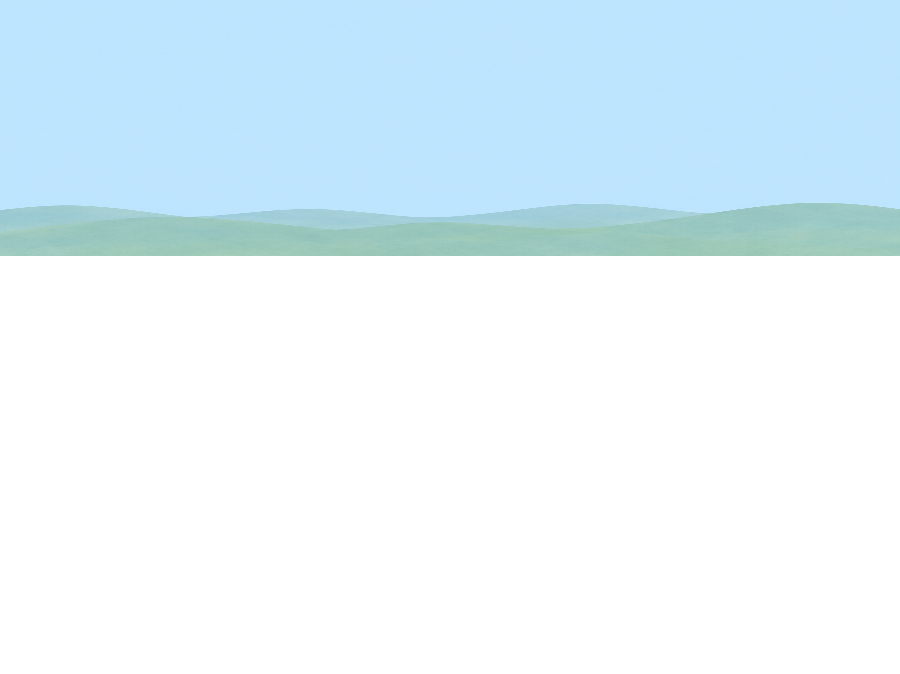
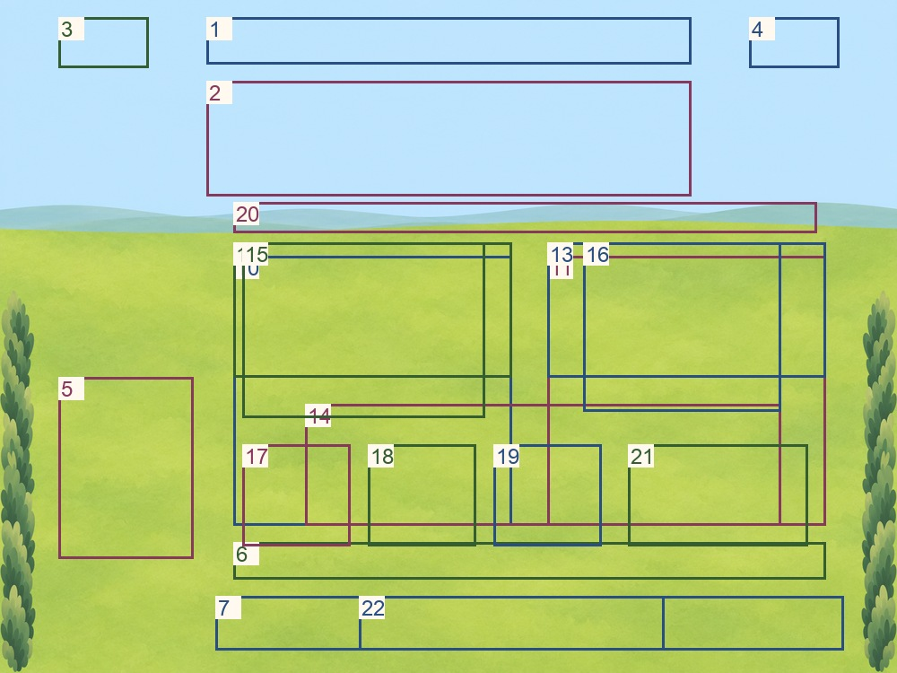
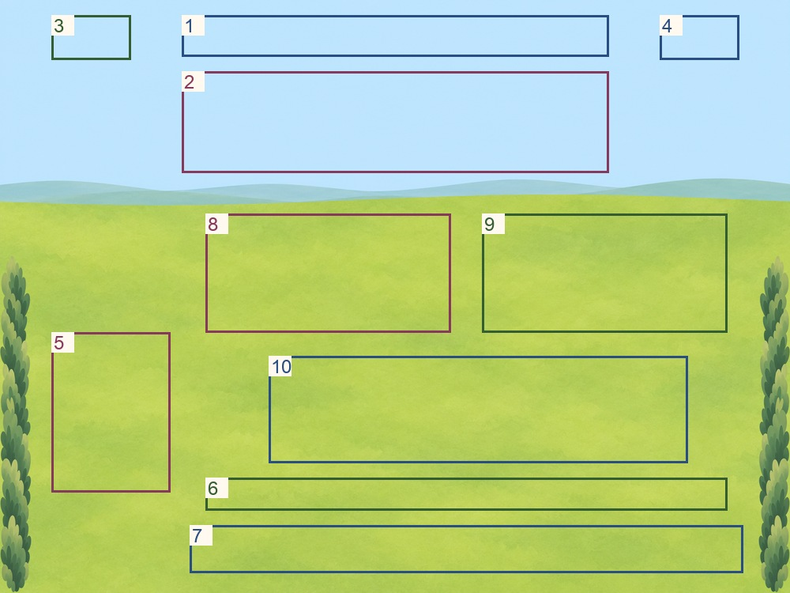
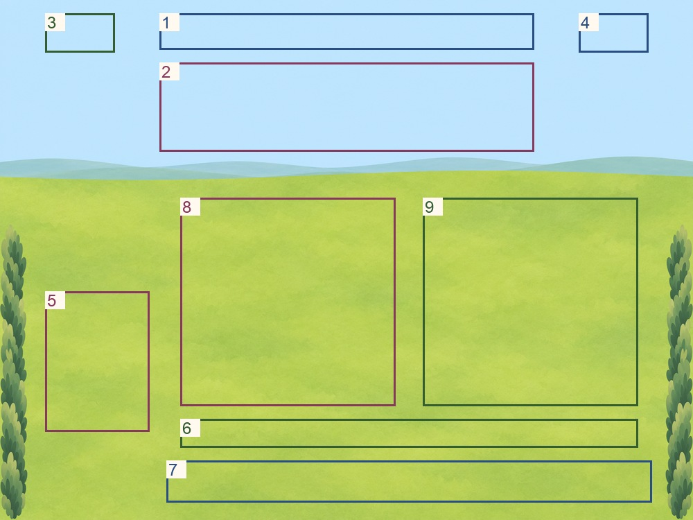
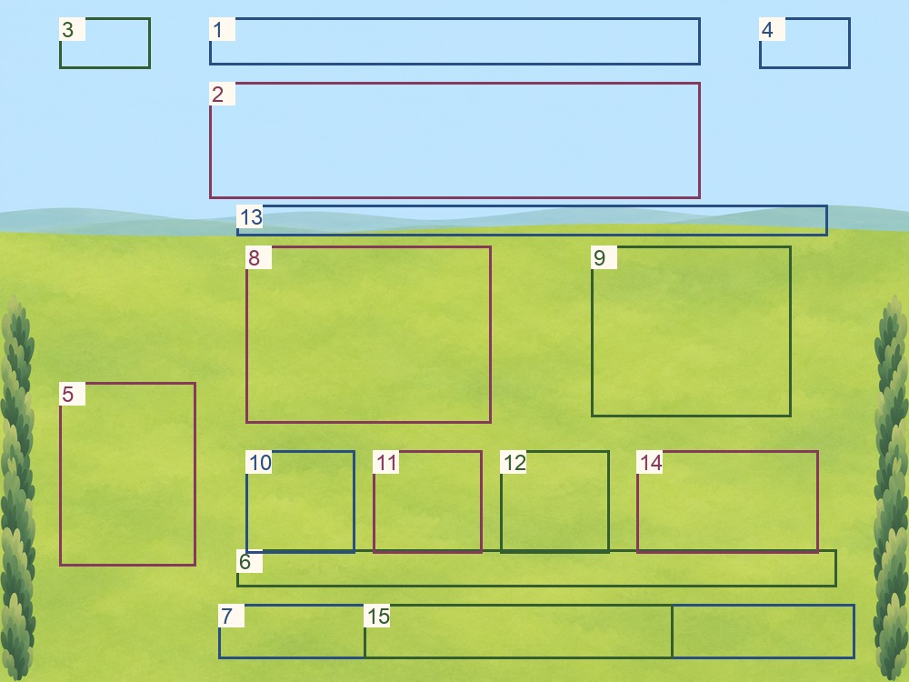

Landscape
2732 × 2048 · proposed canvas

Exact composite PNG · Editable OpenRaster · Exploded sheet
Proposed clearances and catalog slot mapping
Outlines below are diagnostics. Overlap in the union combines alternate activity layouts; it does not place all pieces simultaneously. Rectangles are phase proposals, not canonical catalog screen coordinates. Foreground alpha is zero inside every rectangle plus 1.5% margin.
Union of all reserved areas

- 1 · session-prompt
- 2 · given-reference
- 3 · home
- 4 · listen
- 5 · guide
- 6 · answer-choices
- 7 · persistent-controls
- 8 · LAYOUT-COUNT/tray
- 9 · LAYOUT-COUNT/basket
- 10 · LAYOUT-TAKE/source-mat
- 11 · LAYOUT-TAKE/friend-plate
- 12 · LAYOUT-JOIN/left-group
- 13 · LAYOUT-JOIN/right-group
- 14 · LAYOUT-JOIN/shared-mat
- 15 · garden/pinwheel-including-full-rotor
- 16 · garden/free-flower-states
- 17 · garden/decor-01
- 18 · garden/decor-02
- 19 · garden/decor-03
- 20 · garden/decor-04-bunting
- 21 · garden/decor-05
- 22 · garden/finish
Count

- 1 · session-prompt
- 2 · given-reference
- 3 · home
- 4 · listen
- 5 · guide
- 6 · answer-choices
- 7 · persistent-controls
- 8 · tray
- 9 · basket
Join

- 1 · session-prompt
- 2 · given-reference
- 3 · home
- 4 · listen
- 5 · guide
- 6 · answer-choices
- 7 · persistent-controls
- 8 · left-group
- 9 · right-group
- 10 · shared-mat
Take away

- 1 · session-prompt
- 2 · given-reference
- 3 · home
- 4 · listen
- 5 · guide
- 6 · answer-choices
- 7 · persistent-controls
- 8 · source-mat
- 9 · friend-plate
Garden toy / Finish

- 1 · session-prompt
- 2 · given-reference
- 3 · home
- 4 · listen
- 5 · guide
- 6 · answer-choices
- 7 · persistent-controls
- 8 · pinwheel-including-full-rotor
- 9 · free-flower-states
- 10 · decor-01
- 11 · decor-02
- 12 · decor-03
- 13 · decor-04-bunting
- 14 · decor-05
- 15 · finish